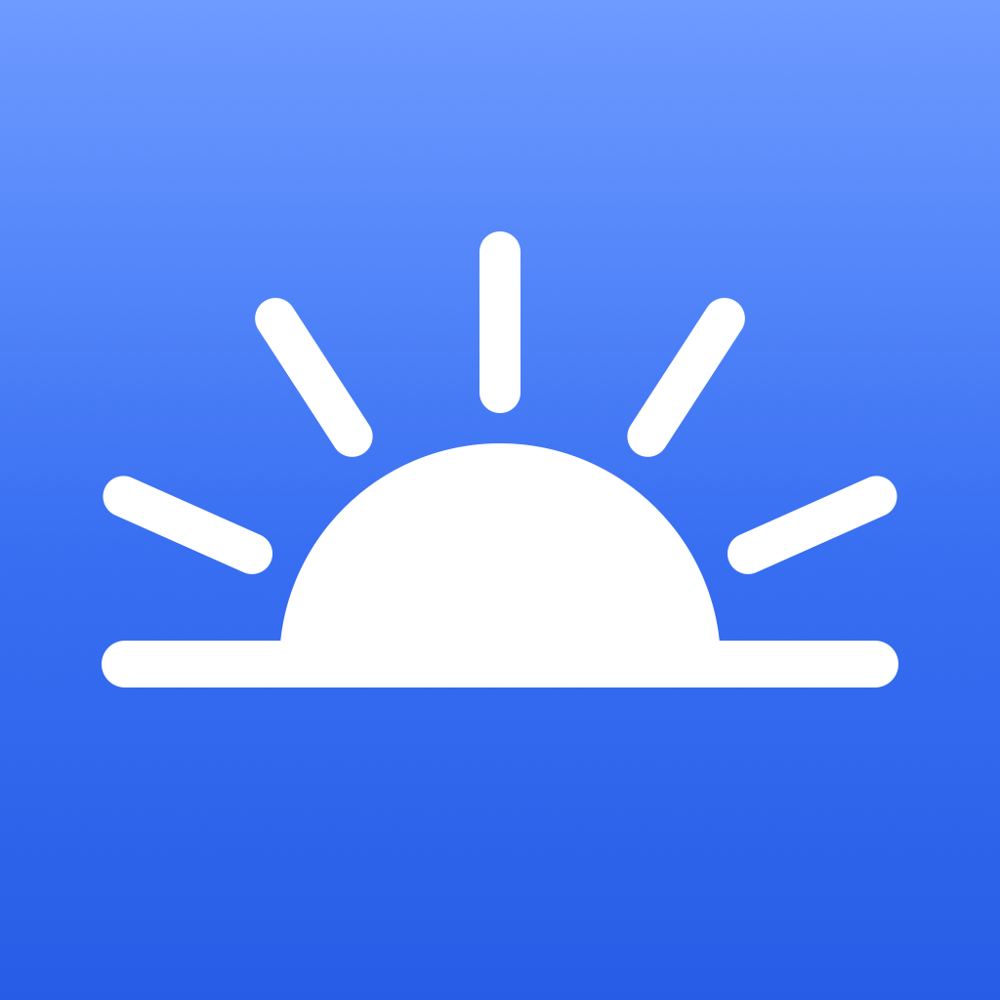

Rise Mission — Privacy Policy
Last updated: August 5, 2026
The short version
Everything personal the app knows — your alarms, wake-up history, streaks, and settings — is stored only on your iPhone. There are no accounts and no servers of ours that your data could travel to. The app uses Google's Firebase Analytics to collect anonymous usage statistics (for example, that the app was installed and opened) so we can understand how Rise Mission is used and measure our advertising. This data is not linked to your identity, and we never see your alarms, history, or camera.
Camera
If you choose the push-up challenge or the QR challenge, Rise Mission uses the camera to detect your body position and count push-ups, or to scan your registered QR code. All camera processing happens on your device using Apple's Vision framework. Camera frames are never recorded, saved, or uploaded — they are analyzed in memory and immediately discarded. You can use the app without the camera at any time by picking the Math or Typing challenge.
Purchases
Rise Mission Pro is a one-time purchase — there is no subscription. Purchases are processed entirely by Apple through the App Store; we never see or store your payment details, and no purchase information is sent to us.
What we store on your device
- Your alarms and their settings
- Your wake-up history and streaks
- Your preferences (default challenge, snooze, haptics)
- Your registered QR code token, if you set one up
Deleting the app removes this locally stored data from your device.
Analytics
Rise Mission includes Google's Firebase Analytics SDK, which collects anonymous, aggregated usage data on our behalf:
- App events such as first open, sessions, screens viewed, whether onboarding was completed, and whether the one-time Pro purchase was made
- General device information: device model, iOS version, app version, language, and approximate region derived from IP address
- A random app-instance identifier that is not tied to your name, email, or Apple Account
Firebase Analytics does not access the Apple advertising identifier (IDFA) in Rise Mission, and the app never shows Apple's cross-app tracking prompt because it does not track you across other companies' apps or websites. Install attribution for our ads uses Apple's privacy-preserving SKAdNetwork. Analytics data is processed by Google under the Firebase privacy terms.
What analytics can never see: your alarms, wake-up history, streaks, camera, QR codes, or anything you type in the app.
What we never do
- No personal content leaves your device — alarms, history, and camera stay on your iPhone
- No cross-app or cross-site tracking, and no advertising SDKs that show ads in the app
- No account, sign-in, or cloud sync
- No selling of any information
Permissions
Alarms: used to schedule the wake-up alarms you create. Camera: requested only if you pick a camera-based challenge, used as described above.
Children
Rise Mission does not knowingly collect personal information from children; the analytics described above are anonymous for all users.
Changes & contact
If this policy ever changes, the update will appear on this page with a new date. Questions: email radadiyasunny970@gmail.com.